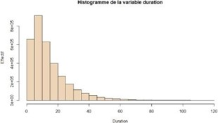
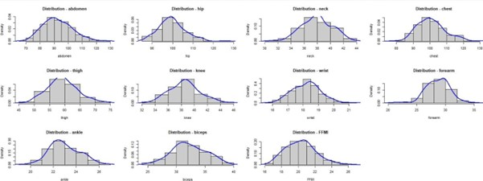
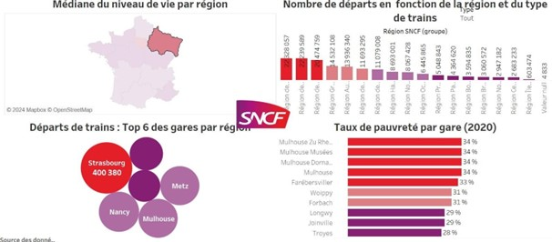
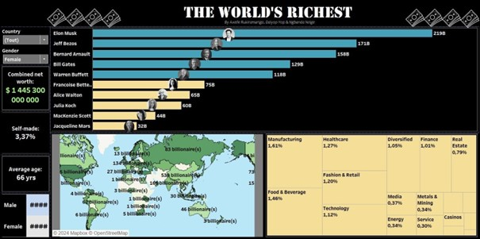

Appuyer sur chaque boxe pour voir plus
↓↓↓
SAÉ 1-03 Préparation et synthèses d’un tableau de données en vue d’une analyse exploratoire simple
Cette SAE vise à analyser les données de location de vélos de la ville de New York pour juin 2022, en utilisant RStudio. Les données proviennent de Citibike et contiennent des informations sur les trajets, les stations et le type de trajet. Nous avons travaillé sur l'importation, le nettoyage et la préparation des données pour créer des graphiques permettant de mieux comprendre les tendances et les habitudes des utilisateurs de vélos. L'analyse exploratoire des données a permis de tirer des conclusions importantes sur les habitudes et les tendances des utilisateurs de vélos.
SAÉ 2-03 Régression sur données réelles
Ce projet vise à étudier l'indice de masse maigre à partir des données de 252 patients masculins collectées par un médecin et disponibles sur Kaggle. L'objectif est de déterminer la variable morphologique la plus pertinente pour expliquer les variations de cet indice et ainsi mieux comprendre les facteurs qui influencent l'obésité. Les données incluent des variables telles que l'âge, le poids, la taille et différentes mesures de tour de corps.
SAÉ 2-04 Datavisualisation (Challenge)
J’ai eu l'opportunité de participer au Challenge Datavisualisation, une compétition nationale organisée par les départements "Science des Données" des IUT. Ce challenge a pour but de mettre les étudiants en situation réelle de traitement et de visualisation de données. Pour l'édition 2022-2023, le projet était centré sur des données fournies par la SNCF, mettant en avant des enjeux réels dans le secteur des transports. Ce challenge nous a permis de développer des compétences pratiques en science des données, en particulier dans la création de visualisations de données impactantes et informatives
SAÉ 2–05 Construction et présentation d’indicateurs de performance
Notre projet, intitulé "Reporting et Datavisualisation & SAE Construction d’indicateurs", a consisté à créer un tableau de bord et un storytelling autour du thème des milliardaires dans le monde, en utilisant les données de Forbes 2022. En groupe de trois étudiants, nous avons abordé ce projet en analysant et en visualisant ces données pour construire un tableau de bord composé de quatre visuels au maximum, au style épuré et travaillé. L'objectif était de choisir un axe d’analyse pertinent et de communiquer nos découvertes de manière claire et engageante à travers le tableau de bord et le storytelling sur Tableau.
SAÉ 3-02 Intégration de données dans un datawarehouse

Ce projet, réalisé par une équipe de quatre personnes, avait pour but la construction de deux bases de données relationnelles pour archiver les mesures de pollution et les données météorologiques de Sheffield depuis 2000. Malgré les défis liés à l'utilisation de nouvelles technologies comme Linux et MariaDB, avec lesquelles nous n'avions pas l'habitude de travailler, nous avons réussi à mener à bien ce projet. Notre mission principale incluait l'extraction, la transformation et le chargement des données, la création d'un entrepôt de données et d'un cube de données pour l'analyse. Ce projet a nécessité l'utilisation de Python pour les scripts ETL et SQL pour la manipulation des données, tout en mettant un accent particulier sur la documentation et la collaboration efficace au sein de l'équipe